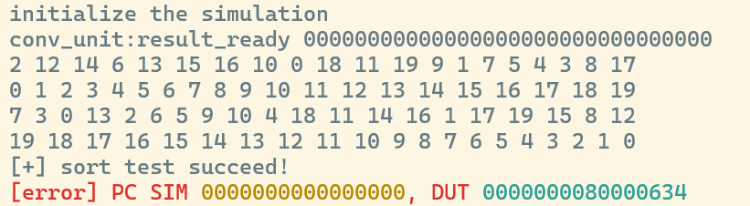

Lab 1：动态分支预测¶
1 实验目的¶
- 了解分支预测原理
- 实现以 BHT 和 BTB 为基础的动态分支预测
2 实验环境¶
- HDL：Verilog、SystemVerilog
- IDE：Vivado
- 开发板：NEXYS A7 (XC7A100T-1CSG324C)
3 实验内容¶
3.1 BHT¶
我们参照实验框架的设定，以PC[6:2] 作为index选择BTB表项，以PC[63:7] 作为tag进行匹配，我们定义hit_if 通过确认索引到的BTB表项有效以及tag一致来记录是否BTB命中，随后jump_pred_if通过判断hit_if和btb_if.state[1]来确认是否跳转，同时pc_target_if进行相应的取指，完成我们的BHT部分
wire hit_if = btb_if.valid && (btb_if.tag == tag_if);
assign jump_pred_if = hit_if && btb_if.state[1];
assign pc_target_if = btb_if.target;
3.2 BTB¶
在EXE阶段，我们需要根据预测的准确与否对于BTB表已有表项进行维护，维护核心是一个2 bit的状态机，逻辑并不复杂；还有一件事是对于新表项的加入，记录需要跳转指令的tag，target以及初始化state以及valid ，给出完整的时序逻辑实现
always_ff @(posedge clk) begin
if (rst) begin
for (int i = 0; i < DEPTH; i++) begin
btb[i].valid <= 1'b0;
end
end else if (inst_is_jump_exe) begin
if (btb_exe.valid && (btb_exe.tag == tag_exe)) begin
if (is_jump_exe) begin
btb[index_exe].target <= pc_target_exe;
case (btb_exe.state)
2'b00: btb[index_exe].state <= 2'b01;
default: btb[index_exe].state <= 2'b11;
endcase
end else begin
case (btb_exe.state)
2'b11: btb[index_exe].state <= 2'b10;
default: btb[index_exe].state <= 2'b00;
endcase
end
end else if (is_jump_exe) begin
btb[index_exe].tag <= tag_exe;
btb[index_exe].target <= pc_target_exe;
btb[index_exe].state <= 2'b00;
btb[index_exe].valid <= 1'b1;
end
end
end
3.3 Core模块的修改¶
现在我们可以将分支预测模块接入我们的数据通路了。为了方便流水间继承预测结果，我们在core_struct.vh 中对于IFID和IDEXE段间寄存器进行修改，加入了pred_taken 用于保存对于是否跳转的预测，随后即可将模块接入流水线；
这里我们要补充的是对于三类不同性质跳转的处理，branch指令毫无疑问是我们分支预测的核心，然而对于jal/jalr指令，它们的跳转是无条件跳转，通过分支预测可以优化这部分指令的性能，但是对于间接跳转指令jalr ，由于其目标地址受到寄存器的影响，导致其记录的目标地址大概率是错误的，从而需要额外的纠错，在这里我们出于统一性考虑还是将其加入分支预测，并在后续进行处理
logic jump_pred_if;
addr_t pc_target_if;
logic inst_is_jump_exe;
assign inst_is_jump_exe = (idexe_r.inst[6:0] == BRANCH_OPCODE) ||
(idexe_r.inst[6:0] == JAL_OPCODE) ||
(idexe_r.inst[6:0] == JALR_OPCODE);
BranchPrediction u_bp (
.clk(clk),
.rst(rst),
.pc_if(pc),
.jump_pred_if(jump_pred_if),
.pc_target_if(pc_target_if),
.pc_exe(idexe_r.pc),
.pc_target_exe(alu_res_ex),
.is_jump_exe(br_taken_ex),
.inst_is_jump_exe(inst_is_jump_exe)
);
我们在上一步加入的pred_taken寄存器由于在完成判断后需要流过ID段，因此要加入相关的继承逻辑
随后来到EX段，我们完成了跳转与否的计算结果，在原本的流水线设计中我们用br_taken_ex 记录了它。结合拿到的预测结果我们将预测错误分为bp_mispredict 和target_mismatch 两者。前者表示预测结果失败，即指令为跳转指令但是预测结果与实际跳转执行情况不一致；后者针对目标地址错误的jalr指令，通过比较当前if段的pc和取到的目标地址来判断
assign target_mismatch = br_taken_ex && pc != alu_res_ex;
assign bp_mispredict = inst_is_jump_exe && idexe_r.pred_taken != br_taken_ex;
随后为我们的pc更新逻辑，原本的switch_mode 更新逻辑保持不变，随后区分跳转指令和非跳转指令，对于非跳转指令，采用接入BTB的正常预测取指即可next_pc = jump_pred_if ? pc_target_if : pc_4 对于跳转指令，我们判断如果是误预测了，那么根据实际的跳转结果进行修正：实际跳转的，拿到alu的计算地址结果；实际不跳转的，拿到跳转指令的下一条指令恢复流动next_pc = br_taken_ex ? alu_res_ex : idexe_r.pc_4 如果是预测地址有误，也同样拿到alu 的计算结果，如果预测本身没有问题，那么按照对于非跳转指令的处理正常流动即可，给出完整的实现
always @(*) begin
if (switch_mode)
next_pc = pc_csr;
else if (inst_is_jump_exe)
if (bp_mispredict)
next_pc = br_taken_ex ? alu_res_ex : idexe_r.pc_4;
else if (target_mismatch)
next_pc=alu_res_ex;
else
next_pc = jump_pred_if ? pc_target_if : pc_4;
else
next_pc = jump_pred_if ? pc_target_if : pc_4;
end
这里还要声明的是flush逻辑，我们把原本的br_taken_ex一律需要跳转优化成了出现上面两种情况的预测错误才需要flush，从而达到优化流水线性能的作用
还有一个对于提交逻辑的改动也做一下说明，主要是exe段后npc的逻辑，由于在中断时它会被写入epc，所以不调整很可能出现奇怪的CSR UNMATCH以及错误。原本的更新逻辑里我们用了next_pc ，由于原先只有跳转和正常流动两种情况，其作为返回后执行的下一条指令没什么问题；但是现在由于加入了分支预测，next_pc很有可能来自if段的预测结果。如果我们还是希望它能保存被中断指令的地址，这里就应该修改掉，进行一个简单的判断即可
4 测试结果¶
执行make verilate_sort 2>/dev/null ，排序测试正确运行

执行make kernel 2>/dev/null ，成功运行kernel，完成实验

5 思考题¶
-
分析排序测试中分支预测成功和预测失败时的相关波形
如波形图，
pc为20的这条指令，在经过两次预测失败后在BTB中state修改为11，在IF阶段做出跳转预测，jump_pred_if置为1（红圈处），随后该指令流入EXE阶段（绿圈处），预测正确且target正确，此时IF段已经在进行该指令取指，没有因为flush损失性能
随后同样是该条指令，此时在
IF阶段预测为跳转（红圈处），但是在EXE阶段发现预测错误，实际为不跳转bp_mispredict置为1（绿圈处），此时将need_flush置为1并进行重新取指（exe段pc的下一条）
-
分析并呈现自己的 Core 中 pc 相关更新逻辑
3.3 Core模块的修改中已给出，不做赘述
-
修改分支预测器中状态预测的比特数，比如从 2 比特改为 1 比特，或者 3 比特。然后修改相应的分支预测逻辑，计算分支预测的成功率。尝试探讨分支预测成功率和分支预测状态比特数的关系，并给出你的结论。
我们对BranchPrediciton模块进行了一点小修改，现在它可以通过编译宏来选择版本了，这儿重申一下1bit和3bit跳转的逻辑，对于1bit实际跳转则置为1，未跳转则置为0；对于3bit根据
state[2]判断是否跳转，实际跳转加一，未跳转减一；同时在Core中我们保留了target_mismatch和br_mistaken，以两者有一者为高电平来判断是否预测错误，我们改动后的代码核心部分如下// ========== 1-bit 状态预测版本 ========== // 1-bit: 0=不跳转, 1=跳转，直接用 state[0] 预测 `ifdef BHT_1BIT assign jump_pred_if = hit_if && btb_if.state[0]; `endif // ========== 3-bit 状态预测版本 ========== // 3-bit: 饱和计数器 000~011 预测不跳转, 100~111 预测跳转，用 state[2] 判断 `ifdef BHT_3BIT assign jump_pred_if = hit_if && btb_if.state[2]; `endif // ========== 2-bit 状态预测版本 (默认) ========== `ifndef BHT_1BIT `ifndef BHT_3BIT assign jump_pred_if = hit_if && btb_if.state[1]; `endif `endif always_ff @(posedge clk) begin if (rst) begin for (int i = 0; i < DEPTH; i++) begin btb[i].valid <= 1'b0; end end else if (inst_is_jump_exe) begin if (btb_exe.valid && (btb_exe.tag == tag_exe)) begin if (is_jump_exe) begin btb[index_exe].target <= pc_target_exe; `ifdef BHT_1BIT btb[index_exe].state <= 1'b1; `elsif BHT_3BIT btb[index_exe].state <= (btb_exe.state == 3'b111) ? 3'b111 : (btb_exe.state + 1); `else case (btb_exe.state) 2'b00: btb[index_exe].state <= 2'b01; default: btb[index_exe].state <= 2'b11; endcase `endif end else begin `ifdef BHT_1BIT btb[index_exe].state <= 1'b0; `elsif BHT_3BIT btb[index_exe].state <= (btb_exe.state == 3'b000) ? 3'b000 : (btb_exe.state - 1); `else case (btb_exe.state) 2'b11: btb[index_exe].state <= 2'b10; default: btb[index_exe].state <= 2'b00; endcase `endif end end else if (is_jump_exe) begin btb[index_exe].tag <= tag_exe; btb[index_exe].target <= pc_target_exe; `ifdef BHT_1BIT btb[index_exe].state <= 1'b1; `elsif BHT_3BIT btb[index_exe].state <= 3'b100; `else btb[index_exe].state <= 2'b10; `endif btb[index_exe].valid <= 1'b1; end end end以下分别展示1bit，2bit，3bit的预测结果


我们分别计算准确率为63.86%，67.24%，66.88%，可以看到1-bit predictor 由于缺乏历史惯性，对循环退出等情况容易产生两次误预测，因此准确率最低；而3-bit predictor 虽然进一步增加了状态数量，但预测器惯性过强，对短周期或变化较快的分支模式适应性下降，因此整体准确率反而略低于 2-bit predictor。我们实际采用的2-bit predictor是一种折中的做法，使预测具有适度惯性的同时，也能适应短周期分支模式，因此准确率最高
-
考虑如下一段程序，函数
foo在三处不同位置被调用：0x100: JAL x1, foo # call site A，返回地址 = 0x104 ... 0x200: JAL x1, foo # call site B，返回地址 = 0x204 ... 0x300: JAL x1, foo # call site C，返回地址 = 0x304 ... foo: ... 0x500: JALR x0, x1, 0 # ret
请回答以下问题：
-
分析上述
ret指令（JALR x0, x1, 0）在 BTB 中对应几个表项？程序按 A→B→C 顺序依次调用 foo 每次 ret 的 BTB 预测结果分别是什么？预测准确率如何？一个表项，预测结果分别为miss，0x104，0x204，预测准确率为0
-
对比
JAL x1, foo这类直接跳转指令，说明为什么 BTB 对 ret 的预测效果存在结构性局限，其根本原因是什么？根本原因是对于JALR指令，由于跳转地址需要通过寄存器计算，导致函数返回地址是动态的，并依赖调用路径，一个PC对应多个target；而我们的BTB设计假设了PC对应唯一target，因此存在局限性
-
针对上述局限性，工业界在微架构层面提出了一种专用硬件结构 Return Address Stack 来解决此问题。请描述该结构的工作原理（push/pop 时机、存储内容），并分析其相比 BTB 预测 ret 的优势，以及该结构自身的局限性。
RAS用在取指阶段，当进行call函数调用时，会将cal指令的下一个地址也就是调用的返回地址压入栈中；而当ret返回时，则执行出栈取出返回地址。这样的方法天然适合函数返回预测（比如对于上述相同的程序可完美预测），但是由于需要额外的栈，因此预测会受到栈深度的影响；同时对于异常的控制流，一旦call-return的对称性受到破坏，也无法保证同步和正确率
-